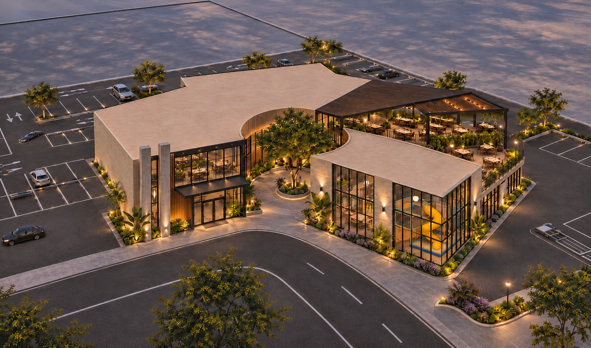

Construyendo un futuro sostenible.
Somos una empresa que se dedica a desarrollar proyectos arquitectónicos sustentables e innovadores.
Conócenos
Somos una empresa joven e innovadora con mucho potencial fundada en 2018.
Todos nuestros proyectos son elaborados teniendo en mente el cuidado y aprovechamiento del medio ambiente.
Misión
Integrar tecnologías y estrategias sustentables en cada uno de nuestros proyectos y aprovechar todos los recursos naturales.
Objetivos
Construir una empresa sustentable altamente comprometida con el medio ambiente.
Valores
- Humanidad - Humildad - Empatía - Hermandad - Ecología - Competitividad -
Servicios
Un mismo equipo se encarga de todo, desde la primera conversación hasta la plantación del último árbol, de modo que las decisiones de diseño y los objetivos medioambientales permanezcan vinculados.
Proyectos seleccionados
Algunos edificios recientes, cada uno diseñado en torno a su clima y su paisaje.
Sustentabilidad
Buscamos lograr un equilibrio entre el medio ambiente, la sociedad y el aprovechamiento de los recursos naturales.
Energía renovable
Energía solar en azoteas, bombas de calor geotérmicas y almacenamiento en baterías permiten que nuestros edificios produzcan tanta energía como consumen.
Materiales ecológicos
Favorecemos la madera, la tierra apisonada, el cáñamo y la piedra reciclada, controlando la huella de carbono incorporada en cada especificación.
Eficiencia energética
Envolventes herméticas y bien aisladas y diseño solar pasivo reducen la demanda de calefacción y refrigeración hasta en un 80%.
Gestión de recursos
La recolección de agua de lluvia, la reutilización de aguas grises y la planificación de residuos de construcción mantienen el agua y los materiales en circulación.
Hablemos de tu proyecto
Cuéntanos qué te gustaría construir. Respondemos a todas las consultas en un plazo de dos días hábiles.
- Oficina
- Calle 24 sur, Plaza del Sol, Puebla, México
- Correo electrónico
- LeaftArq@gmail.com
- Teléfono
- +52 222 161 5111
- Horario
- Lunes a Viernes, 9:00 a 18:00